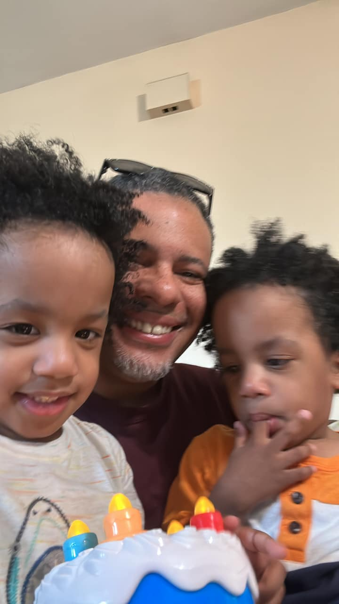

This is where you can provide information about yourself, your background, interests, and anything else you'd like to share with your visitors.

As a recent graduate with a Bachelor of Science in Information Technology, I am seeking opportunities to apply my skills and knowledge in network engineering. My experience as a Network Technician and Helpdesk Technician at HCL Technologies North America has equipped me with expertise in incident resolution, technical troubleshooting, and equipment maintenance.
I am also certified in CISSO, CPEH, and Networking+, demonstrating my proficiency in information security and network administration.
In addition, I have a background in computer programming and have worked on projects with the Wayne State Cyber Defense Club during my time at Wayne State University. I have also gained experience in workforce management through my previous role as a Workforce Management Analyst at Walgreens Boots Alliance.
With strong skills in programming languages such as C, C++, Java, Python, and C#, as well as in Linux and SQL, I am eager to contribute my skills to a team focused on network engineering and cybersecurity.